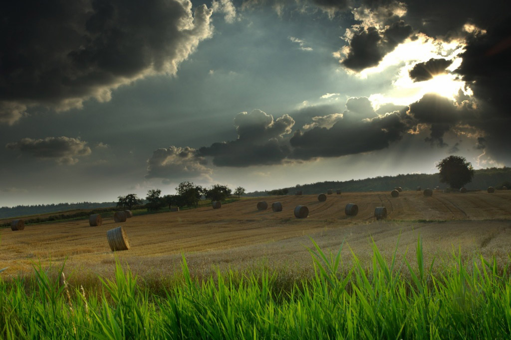

Leitura Orante
Leituras do Dia
Sexta - feira 29ª do Tempo Comum
(Verde - Ofício do dia )
23 de outubro de 2020
Leitura Orante do Evangelho
Ouça o áudio da oração e reflexão do padre Francisco das Chagas


Oração do dia
Deus eterno e todo-poderoso, dai-nos a graça de estar sempre ao vosso dispor e vos servir de todo o coração. Por nosso Senhor Jesus Cristo, vosso Filho, na unidade do Espírito Santo.
Leitura: Ef 4,1-6
Irmãos, 1eu, prisioneiro no Senhor, vos exorto a caminhardes de acordo com a vocação que recebestes: 2com toda a humildade e mansidão, suportai-vos uns aos outros com paciência, no amor. 3Aplicai-vos a guardar a unidade do espírito pelo vínculo da paz. 4Há um só corpo e um só Espírito, como também é uma só a esperança à qual fostes chamados. 5Há um só Senhor, uma só fé, um só batismo, 6um só Deus e Pai de todos, que reina sobre todos, age por meio de todos e permanece em todos. – Palavra do Senhor.
Salmo Responsorial: 23(24)
É assim a geração dos que buscam vossa face, ó Senhor, Deus de Israel.
Ao Senhor pertence a terra e o que ela encerra, o mundo inteiro com os seres que o povoam; porque ele a tornou firme sobre os mares e, sobre as águas, a mantém inabalável.
É assim a geração dos que buscam vossa face, ó Senhor, Deus de Israel.
“Quem subirá até o monte do Senhor, quem ficará em sua santa habitação?” “Quem tem mãos puras e inocente coração, quem não dirige sua mente para o crime.
É assim a geração dos que buscam vossa face, ó Senhor, Deus de Israel.
Sobre este desce a bênção do Senhor e a recompensa de seu Deus e salvador.” “É assim a geração dos que o procuram e do Deus de Israel buscam a face.”
É assim a geração dos que buscam vossa face, ó Senhor, Deus de Israel.Evangelho: Lucas 12 , 54 - 59
Naquele tempo, 54Jesus dizia às multidões: “Quando vedes uma nuvem vinda do ocidente, logo dizeis que vem chuva. E assim acontece. 55Quando sentis soprar o vento do sul, logo dizeis que vai fazer calor. E assim acontece. 56Hipócritas! Vós sabeis interpretar o aspecto da terra e do céu. Como é que não sabeis interpretar o tempo presente? 57Por que não julgais por vós mesmos o que é justo? 58Quando, pois, tu vais com o teu adversário apresentar-te diante do magistrado, procura resolver o caso com ele enquanto estais a caminho. Senão ele te levará ao juiz, o juiz te entregará ao guarda, e o guarda te jogará na cadeia. 59Eu te digo, daí tu não sairás, enquanto não pagares o último centavo”. – Palavra da Salvação.
Leituras do mês
TAGS
missao Amazonia evengel covid-19 indigenas novica papa francisco
Destaques
Província Stella Matutina
Rua São Benedito, 2146 - Santo Amaro - São Paulo - SP |
Tel. (11)
5547-7222


Província Spiritus Divinae Sapientiae
Rua Arnaldo Janssen, 320 - Cara-Cara - Ponta Grossa - PR |
Tel. (42) 3326 4091